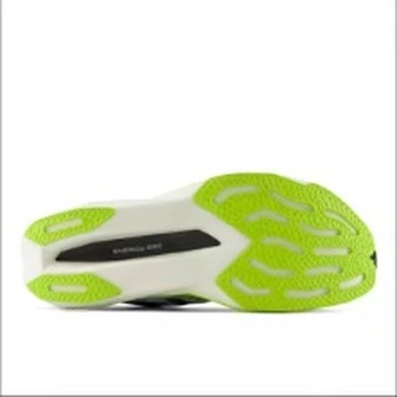
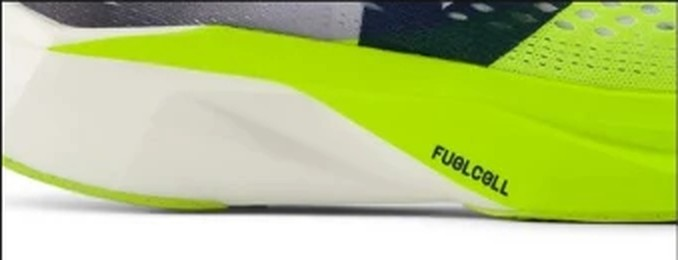

SPEED｜スピードトレーナー
スピード部門1位、実測200g。
スピード部門17足の1位。実測200gと軽く、前足部のエネルギーリターンは75.8%でスコアのある107足の中で10番目に高い。ただし2位のREBEL v5との差は0.03点で、価格はPacer v2のほうが¥8,910高い。何にお金を払うのかを確認してから選びたい。
ペース走やインターバルで速く走りたい人。レースでも使える練習靴を探している人。軽さを優先する人。
雨の日も走る人。着地でぶれやすい人。価格を抑えたい人。


実測200gは、スコアのある107足の中で軽いほうから11番目。前足部のエネルギーリターン75.8%は上から10番目。スピード部門で重く見る2項目が、どちらも上位にある。
フォーム硬度は27.5ACと柔らかい。一方で曲げ剛性は17.2Nあり、REBEL v5（11.7N）より曲がりにくい。柔らかく沈んで、硬く戻る組み合わせである。
通気性は5段階で5。夏場のポイント練習でも蒸れにくい。摩耗深度は0.8mmで、推定寿命は約700km。
5点満点。計測値を当サイトのルールで点数にしたもの。
軽さ4.5、スピード4.5、耐久性4.5が点を支えている。安定性とグリップは3.0で、ここが弱い。スピード部門は反発と軽さの比重が大きいので、この形で1位に入った。
高いほど反発する。
軽いほど短い。
| Pacer v2 | REBEL v5 | EVO SL | |
|---|---|---|---|
| 価格 | ¥25,850 | ¥16,940 | ¥19,800 |
| 実測重量 | 200g | 220g | 223g |
| 衝撃吸収（SA） | 132 | 145 | 147 |
| エネルギーリターン前足部 | 75.8% | 67.3% | 73.5% |
| 摩擦係数 | 0.44 | 0.53 | 0.40 |
| 摩耗深度 | 0.8mm | 0.8mm | 0.6mm |
| 性能点 | 3.92 | 3.89 | 3.77 |
| コスパ点 | 4 | 5 | 4.5 |
3足の中で最も軽く、反発も最も高い。ただしREBEL v5は¥16,940でグリップも高く、性能点は0.03点しか変わらない。コスパ点はREBEL v5が5.0、Pacer v2が4.0である。
弱点は土台である。かかとの幅は85.3mmと狭く、ヒール剛性は2。摩擦係数も0.44と高くない。速く走れる靴だが、着地が安定しない人や濡れた路面では気をつけたい。
かかとが狭く、土台は細めである。試着では、かかとがはみ出す感覚がないか確認したい。
週1回のポイント練習を確実にこなしたい人の靴である。ジョグ用を別に持ち、速い日だけこの靴を履く使い方が合う。レース用としても使える軽さがある。
軽さと反発はスピード部門で一番。ただしREBEL v5との差は小さく、¥8,910の差額を軽さに払えるかで選びたい。
※本記事は海外ラボ（RunRepeat）の計測データとメーカー公表値、当サイトの計算をもとにした分析です。計測はUS9（約27cm）です。1kmあたりの費用は摩耗深度から推定した寿命での概算です。価格は当サイトの掲載値で、変更されている場合があります。